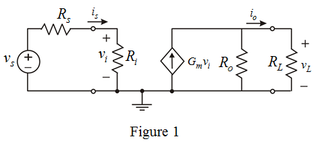
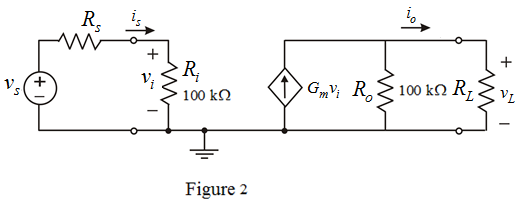

Consider, if  is varied keepingconstant. Write the conditions for and .
is varied keepingconstant. Write the conditions for and .
Consider the source signal is voltage and load signal is current. Hence, a voltage to current amplifier is required.
Draw the circuit diagram.

Apply voltage division rule and determine the expression for .
Determine the output voltage.
Consider, if is varied keepingconstant. Write the conditions for and .
Calculate the relative change in load current.
Consider for maximum change in output current, the corresponding change in is.
Consider the value of input resistance,  is of the form
is of the form  .
.
Write the value of input resistance of the form  .
.
Therefore, the value of input resistance is .
Consider, if is varied keeping constant, then write the conditions for and .
constant, then write the conditions for and .
Calculate the relative change in load current.
Consider for maximum change in output current, the corresponding change in  is.
is.
Consider the value of input resistance, is of the form  .
.
Write the value of input resistance of the form  .
.
Therefore, the value of output resistance is .
Sketch the circuit model.

The input resistance is very high and output resistance is high. The amplifier is trans-conductance amplifier.
Therefore, the amplifier is trans-conductance amplifier.

Therefore, the trans-conductance gain of the intrinsic circuit is .